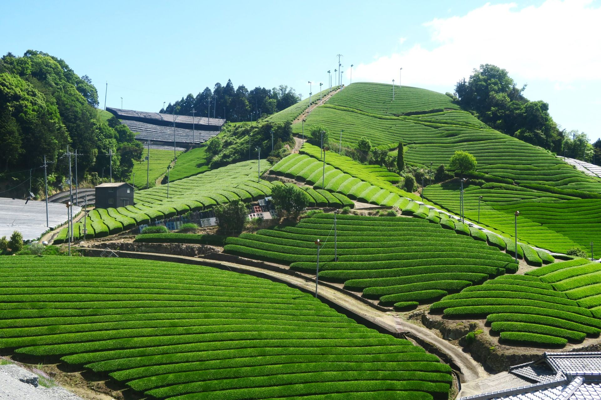

The land, the method, the people and the cup, recorded one farm at a time.
In progress Profiles are published once each farmer has confirmed them.
One farm and one farmer at a time. Each plot, its knowledge and its taste treated as worth keeping.
Who grew it, where, how, and how it tastes: recorded and published instead of hidden in a blend.
The growers and the people who care about origin, with as little as possible in between.
Small lots, named farms, and seasons that end when the harvest does.
Leaf shaded before harvest gives Uji matcha a bold, savoury umami, a subtle sweetness and a silky, creamy texture.
That is Uji matcha in general. How each farm departs from it is what its profile records.
One farm, one harvest, named on the tin.
Small portions from several Uji farms, side by side. Neighbouring fields are easiest to tell apart in front of you.
When a plot gives something unusual, we keep it apart. Small by nature, not by marketing.
In progress Enquiry only for now. Prices and ordering are published farm by farm, as terms are agreed with each farmer.
As matcha spreads, the Uji name is used more loosely and the farms behind it grow fewer. There is still time to protect both.
With no clear labelling rules, matcha sold as Uji matcha need not come from Uji. Each time, the name means a little less.
Shading, picking, and judging when a leaf is ready live in growers who have done it for decades. Little is written down.
Fields a short walk apart do not give the same cup. Blend by region alone and that difference never reaches the bowl.
Part of every harvest misses the premium grade, though grown, shaded and picked the same way. We are studying what that leaf can properly become.
In progress Early research. Findings are published once they are confirmed, not before.
Each one helps directly. Choose one, or all three.
Ask Japan to require regional labelling on matcha, so the Uji name keeps meaning Uji.
Donations will fund recording each farm’s story, translating it, and sending out small single-farm lots.
In progress · Opening soon
For cafés, shops, chefs, researchers and press who want to work with named Uji farms.
Because there are no clear regional traceability rules, matcha labelled as Uji matcha need not have come from Uji. This petition asks the Japanese government to mandate clear regional traceability labelling on all matcha products, so that consumers can tell authentic Uji matcha apart and the work of local farmers is protected.
Living in Uji City, I’ve felt a deep connection to Uji matcha — a symbol of our region’s cultural heritage and a testament to generations of dedication and refinement. Uji matcha is an emblem of our community’s identity and history. Yet, as matcha has transcended borders and gained popularity worldwide, the distinctiveness of Uji matcha is slowly fading into obscurity due to the lack of proper regional labeling.
Uji is world-renowned for producing matcha of unparalleled quality, a reputation built over centuries. However, many consumers today, both locally and internationally, remain unaware of where their matcha truly originates. Because of the lack of clear regional traceability rules, many customers consume matcha that is labelled as Uji matcha but doesn’t actually originate here. This lack of transparency not only undermines the value of Uji matcha but also poses a threat to our cultural legacy, risking its gradual disappearance from the annals of treasured Japanese traditions.
Regional labeling would not only empower consumers with the knowledge of where their matcha leaves were grown and produced but also help preserve Uji’s rich heritage. By mandating such labels, we ensure that the centuries-old artistry of Uji matcha cultivation is recognized and that consumers can make informed choices, distinguishing authentic Uji matcha from others.
The Japanese government has the power to enact policies that would protect the reputations of historically significant regions like Uji. As stewards of our cultural heritage, let’s urge the relevant authorities to mandate clear regional traceability labelling for all matcha products to support the tireless work of local farmers. Your signature is a step towards ensuring that future generations can continue to appreciate and marvel at the rich traditions encapsulated in every cup of Uji matcha.
Please sign this petition to preserve the distinguished identity of Uji matcha, celebrate the legacy of Uji City, and push for transparency in matcha labeling. Together, we can prevent the dilution of our cultural heritage and ensure that Uji matcha gains its rightful place on the global stage.